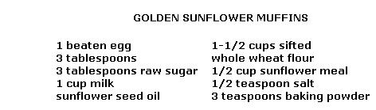

I'll bet that half of all the folks who tended gardens this year raised sunflowers. Unfortunately, I can also safely wager that relatively few of those growers will actually use their sky-scraping flowers (which, apparently, have been cultivated strictly for ornamental value). What a waste!
Sunflower seeds contain 55% protein (almost as much, by weight, as steak) and considerable quantities of B vitamins ... plus calcium, phosphorus, iron, nitrogen, and vitamins A and E. As an added bonus for weight watchers, the plant's seeds test out at only 48 calories per tablespoon (as opposed to 85 calories for the same amount of peanuts .. sorry about that, Jimmy Carter).
The petals and seeds of the sunflower can be turned into natural dyes, and the empty seed hulls are sometimes used as a coffee substitute. German pipe smokers occasionally even dry the plant's leaves and use them for tobacco. And, if you're a weaver, you probably already know that the stalks of the sunflower - when treated like flax - will yield silk-like fibers that are tough enough to work with.
In short, if you grew sunflowers this year "just for the fun of it", the real fun is about to begin!
Now's the time to wrap the big, nodding heads on your sunflowers with cheesecloth or to slip mesh bags down over them (to protect the seed-loaded tops from snack-loving birds). Or, if the seeds are large enough, you can simply cut off the heads - leaving about two feet of stem attached to them-and hang the heavy "plates" upside down in a well-ventilated attic or other non-humid place.
When the backs of the heads have turned completely brown and there's no trace of green left, the seeds have fully matured and are ready to be removed. Some folks coax them off with a stiff-wire brush, fish scaler, or similar tool. But if you're working with more than just a few flowers, you May want to stretch and nail a piece of half-inch-mesh hardware cloth over a wooden box, and gently rub the flower heads over the screen. The seeds will fall through the mesh and collect in the container.
If you find that a number of the nuggets are still somewhat "green", spread 'em out on a newspaper and let them dry a little longer. Then, once the seeds are completely free of moisture, you can store them in small covered jars (they'll heat up and lose nutritional value if kept together in large quantities). Stir the seeds every couple of weeks to keep 'em from becoming musty.
Remember that the edible nutmeats inside sunflower seeds lose their vitamins when exposed to the air for any length of time ... so it's a good idea to shell the food only as you need it. Roasted seeds eaten as a snack, of course, are cracked open and popped into the mouth individually, just as nuts are. But if you're going to use quantities of the raw kernels for cooking, you'll have to adopt a more productive method.
One good technique is to soak the seeds in cold water for several hours. The husks eventually soften, and can then be removed quite easily. Or, you can spread your "victims" between two layers of newspaper, and crush the hulls with an old-fashioned rolling pin.
Another method is revealed in Euell Gibbons' Stalking The Wild Asparagus. "I discovered that if the seeds were run through a food chopper fitted with a plate barely large enough to prevent the seed going through whole," writes Euell, "the shells would be cracked off." Mr. Gibbons then dumped the crushed hull-andkernel mixture into a large bowl of water, and let it stand for half an hour. The light outer coverings floated to the top of the liquid and were skimmed off ... and the heavy kernels-which stayed at the bottom-were poured into a piece of muslin, squeezed, spread on a baking sheet, and dried in a slow oven!
Incidentally, the process just described was Euell's way of getting ready to make a flour-like sunflower-seed meal ... and you can do that, too! When the crushed kernels are dry, pass them through a sieve, and save the pieces that won't go through for use as nuts in cookies and such. The portion which is small enough to come out the other side can then be put through a food chopperusing the finest plate attachment possible-or a grain mill. Result? You'll have a supertasty high-protein meal that can be used as an "extender" in meat loafs and the like ... and as a substitute for some of the flour in baking recipes.
Speaking of recipes, the ones that follow are just a few of my favorites. Try 'em, and then to a little experimenting on your own. See for yourself why sunflowers really are gold from the garden!
Using a mixer, blend egg, oil, and sugar to a creamy consistency. Add the milk and stir in thoroughly. In a separate bowl, sift together the whole wheat flour, sunflower meal, salt, and baking powder. Add the dry ingredients to the liquid blend, stirring only enough to mix. Then spoon batter into greased muffin tin, and bake twenty to thirty minutes at 400° F.
2 packages active yeast (dry or compressed)
1-1/2 cups lukewarm milk
2 tablespoons raw sugar
2 tablespoons sunflower seed oil
1/4 cup raw sunflower seeds (chopped, or put through grinder to make a paste)
1-1/2 cups sifted whole wheat flour
1 tablespoon salt
Soften yeast in lukewarm milk, and stir in remaining ingredients. Spoon the mixture onto a moderately hot griddle. Cook slowly until bottom side is brown and bubbles have formed on upper surface. Turn and bake until other side is done. Serve immediately.
Place seeds in a large jar or crock, and cover them with a saltwater solution (one tablespoon of sea salt for each pint of water you use). Let soak overnight. The next day, dry the seeds in the sun or with paper towels, and spread them on a baking sheet. Roast in a moderate (300° F) oven for fifteen minutes - stirring frequently - until the seeds are light brown.
1 cup cooked millet
1/4 cup finely chopped green pepper
3 tablespoons finely chopped onion
1 1 /2 teaspoons sea salt (optional)
2 teaspoons lemon juice
1/4 cup sunflower seeds
1/2 teaspoon soy sauce
1 cup whole wheat broad crumbs
1 cup grated cheese
1/2 cup powdered milk
1 egg
1/2 cup milk
Mix all ingredients. Place in greased loaf pan and bake at 350° F for 1 hour. Serve hot with tomato or mushroom sauce. Makes a meal for six people.
Using a food grinder, make a paste of raw sunflower kernels, sesame meal, and honey or raw sugar. Remove pits from prunes or dates and stuff with the mixture.
1 cup dates
1/2 cup raisins
1/2 cup nuts (walnuts, almonds, etc.)
1/4 cup sunflower seeds
Finely grind and mix together all ingredients. Mold mixture into small balls and roll in natural shredded coconut. Other fruits may be used in place of - or in addition to - the dates and raisins.
Brown empty hulls of sunflower seeds in a small frying pan (be careful not to let them burn) and grind the hulls in a grain mill. Then, for each cup of beverage, steep 1 teaspoon of the ground hulls (more or less, to taste) in one cup of boiling water for three minutes. Drink as is, or sweeten with honey.
|
 |
|
|